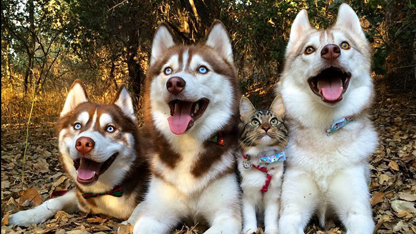

资讯详情
养个"吸血鬼"做宠物！重口，慎入！
小狗的肠胃是十分脆弱的容易呕吐和拉肚子，肉食和牛奶都是容易引起狗狗出现肠胃问题的东西，所以对狗狗最安全的饮食是狗粮加白开水，虽然清淡可是不会引起什麼问题。温馨提醒：对於已经呕吐和拉稀的狗来说，禁食是尽快让肠胃恢复正常工作的办法。对於清除体内的垃圾，减少肠胃的负担都是很有好处的。

看狗粮的形态是不是均匀，顏色是不是油亮又灰暗，是不是沾著很多碎末那可能不够新鲜。闻狗粮的气味，有没有变酸变臭。尝是鑑别狗粮的真偽避免吃到假的食物。温馨提醒：少量多餐是狗狗最佳的饮食习惯，帮助狗狗控制进食量，减少肠胃负担，更不容易引起肠胃问题。